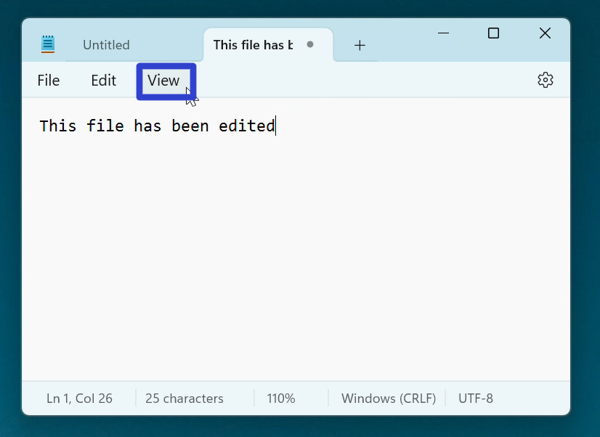
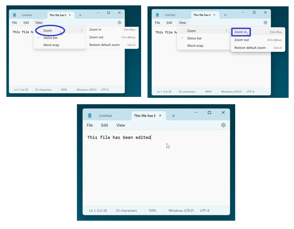
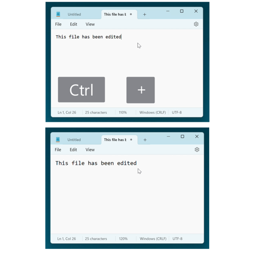
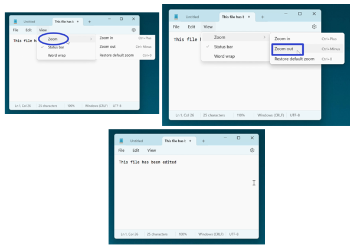
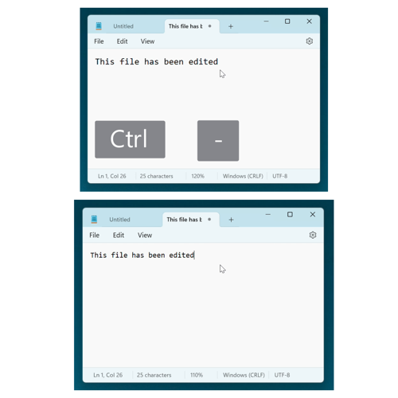
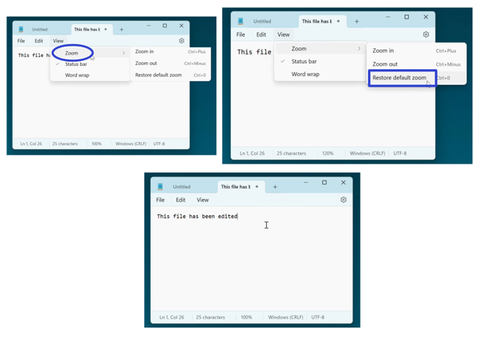
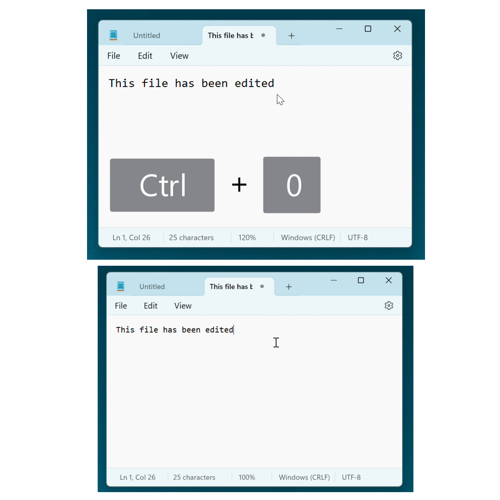

How to Use Zoom in the Microsoft Notepad App (Windows 11)
This tutorial covers:
How to Zoom In:
How to Zoom Out:
How to Restore Default Zoom:
No time to scroll down? Click through this tutorial presentation:
Follow along with a video tutorial:
How to Zoom In With Menu
- Step 1: First open Notepad. In the upper left click the “View” button. 
- Step 2: In the menu that opens, hover over “Zoom”, and in the second menu that opens click “Zoom in”. The Notepad window zoom percentage increases by 10%. 
How to Zoom In With Keyboard Shortcut
- Step 1: Open Notepad. On the keyboard press Ctrl and +. The Notepad window zoom percentage increases by 10%. 
How to Zoom Out With Menu
- Step 1: First open Notepad. In the upper left click the “View” button.
- Step 2: In the menu that opens, hover over “Zoom”, and in the second menu that opens click “Zoom out”. The Notepad window zoom percentage decreases by 10%. 
How to Zoom Out With Keyboard Shortcut
- Step 1: Open Notepad. On the keyboard press Ctrl and -. The Notepad window zoom percentage decreases by 10%. 
How to Restore Default Zoom With Menu
- Step 1: First open Notepad and zoom in or zoom out. In the upper left click the “View” button.
- Step 2: In the menu that opens, hover over “Zoom” and in the second menu that opens, click “Restore default zoom”. The Notepad window zoom percentage returns to 100%. 
How to Restore Default Zoom With Keyboard Shortcut
- Step 1: Open Notepad and zoom in or zoom out. On the keyboard press Ctrl + 0. The Notepad window zoom percentage returns to 100%. 
Refer to these instructions later with this free tutorial PDF.